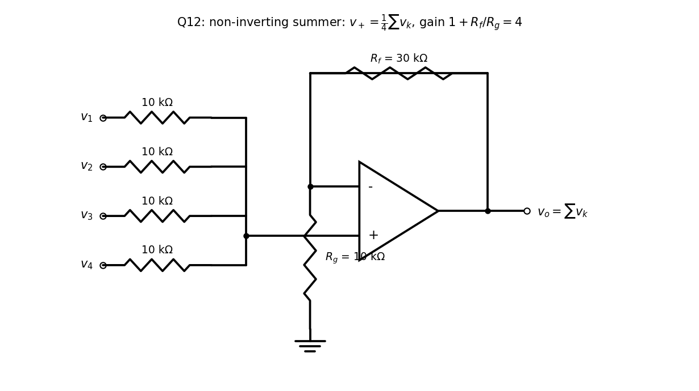

Basic Electrical Engineering · Problems · 2 min read
T6-Q12 — Bridge Weighing Circuit
Hub: Tutorial 6 on OP-AMP · Previous: T6-Q11 - Design for z = 2x - 3y
Tests: summing amplifier, sign and scaling of a design, Voltage Divider Rule.
Given
(mV per kg), want with a positive sign and unity weight on each.
Principle and why it applies
The total weight is the sum of the four pad voltages, with gain +1 each. An inverting summer gives (wrong sign); a non-inverting summer gives the right sign in one stage. Equal resistors from each source to the input make the average of the four (the sources are low-impedance, so the average is not loaded down):
then a non-inverting stage of gain 4 restores the sum.
Solution
Standard values: four inputs through kΩ each to the input; kΩ, kΩ. Then (1 mV per kg).

Alternative (two inverting stages). Inverting summer with kΩ: ; followed by an inverter ( kΩ, kΩ): . This costs two op-amps but each input sees a defined resistance to a virtual ground, so the channels do not interact.
Alarm threshold. kg corresponds to V: a comparator against 1.6 V flags overweight vehicles.
Result
Non-inverting summing amplifier: four kΩ input resistors to the terminal, kΩ, kΩ, giving (positive, 1 mV/kg); 1600 kg gives 1.6 V.
Check
Four pads each at 400 mV: mV, V ✓. One pad at 1600 mV, others 0: mV, V ✓ (the circuit weights every pad equally, as required).
Trap / alternative
- Using an inverting summer alone: the DMM would read V.
- Source resistance matters in the non-inverting summer: the average depends on equal total resistance in each branch, so if the pad sources have different output resistances the weights drift; the problem's "no need to buffer" assumption removes this.